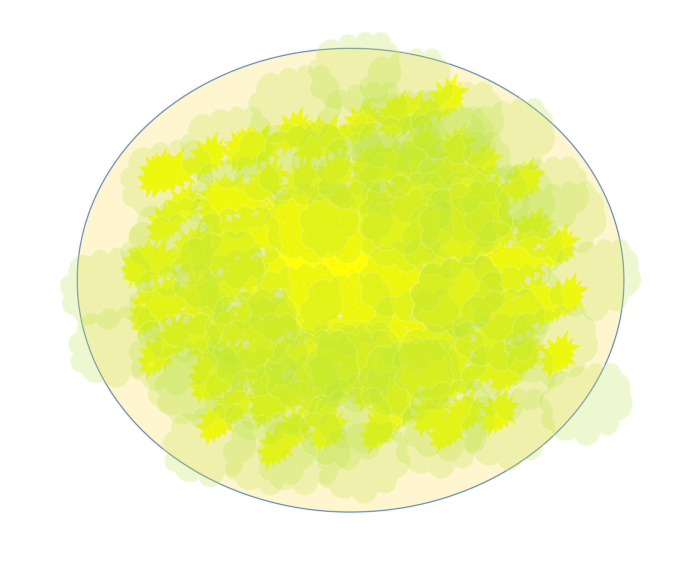

H4mbur63r

Description
This scrumptious vegan hamburger/junk food substitute is increbily easy
to make. It debatably tastes just like your favorite fast food burger and
you can eat dozens of them before nearing the same amount of calories!
Ingredients
- 1 Rice Cake
- Nutritional Yeast
- Extra Virgin Avocado Oil
- Dill Pickle Juice
Steps
- Gather your ingredients
- Mix some nutch and oil together
- Spread that mixture on your rice cake
- Sprinkle/Douse some pickle juice on the nutchy cake
- Repeat for as many bur63rs as you want
- Go h4m on that bur63r!
Home